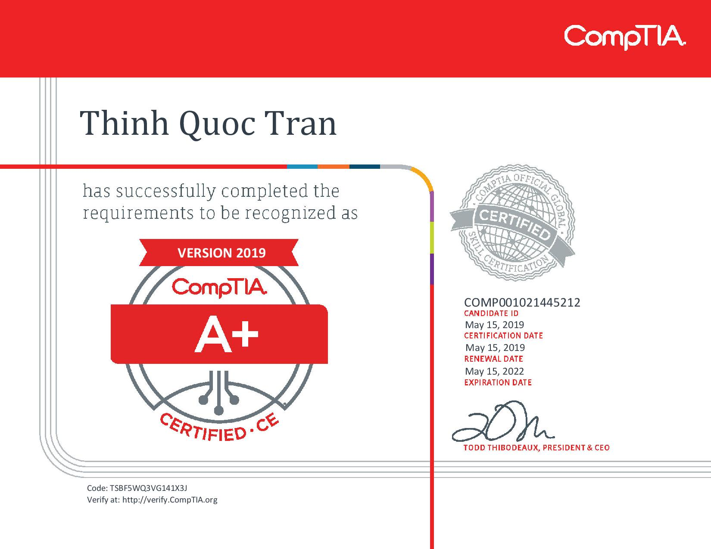

Thinh Tran
Email:ymtmb1@gmail.com
708-215-1734
I am a full-time student at Illinois Institute of Technology. This is my second semester as a first year. I am majoring in ITM and Cybersecurity. I’ve had experiences with technology my whole life. With the world involving around technology, I hope to continue evolving with it, and pursing my career helping big companies when it come to the security they need.
● Graduated May 22nd, 2019
● Honor Roll 2015-2019
● GPA:3.7
● Enrolled: August 19, 2019
● Major: Information Technology and Mangement
● GPA:3.5
● Administer tech support
● Fixed computer bugs
● Repaired LCDs for student Chromebooks
● Any additional online support requested by students.
● Competed in competitive basketball.
● Played an important role on the team.
● Played for 2 years
●Organization that gave me oppportunies to be friends with kids that have special needs that struggle making friends everyday. It helps become a leader and a great person. I was able to create many memories with the friends I have.
● Clean tables
● Take and serve people’s orders
● Experience with many customers around the neighborhood.
● Semi-Fluent in Vietnamese & French
● Technology savvy
● IT support
● Communication skills, worked with IT and students before.
●Honor Roll – Freshman 2016, Sophomore 2017, Junior 2018, Senior 2019
●CompTiA A+ Certified
●QuickBooks Certified
●Microsoft Word Certified
